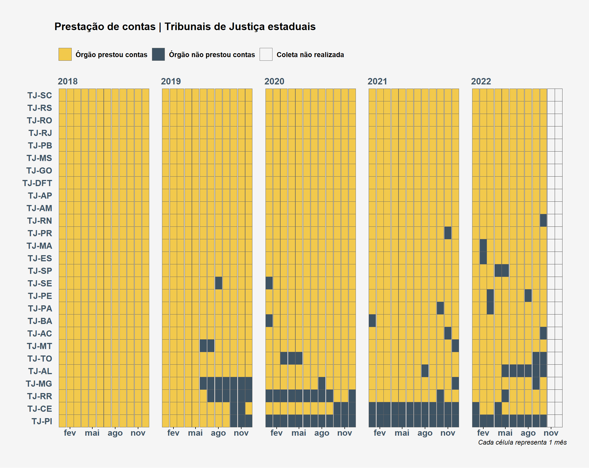
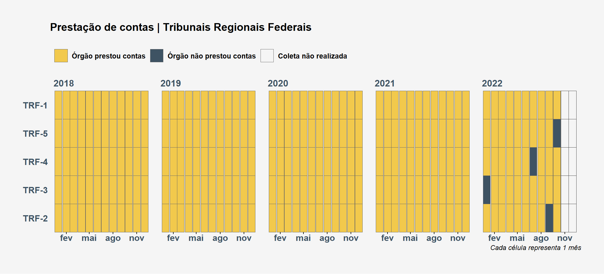
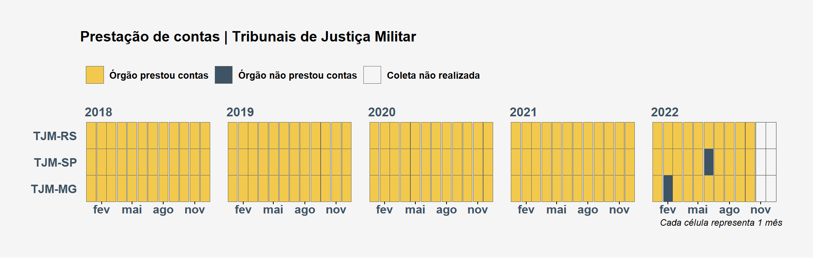
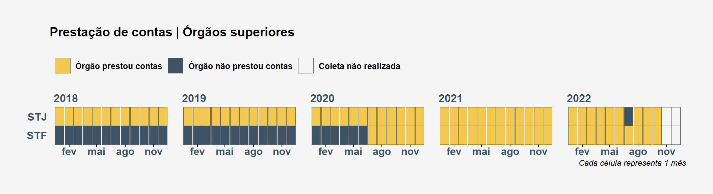
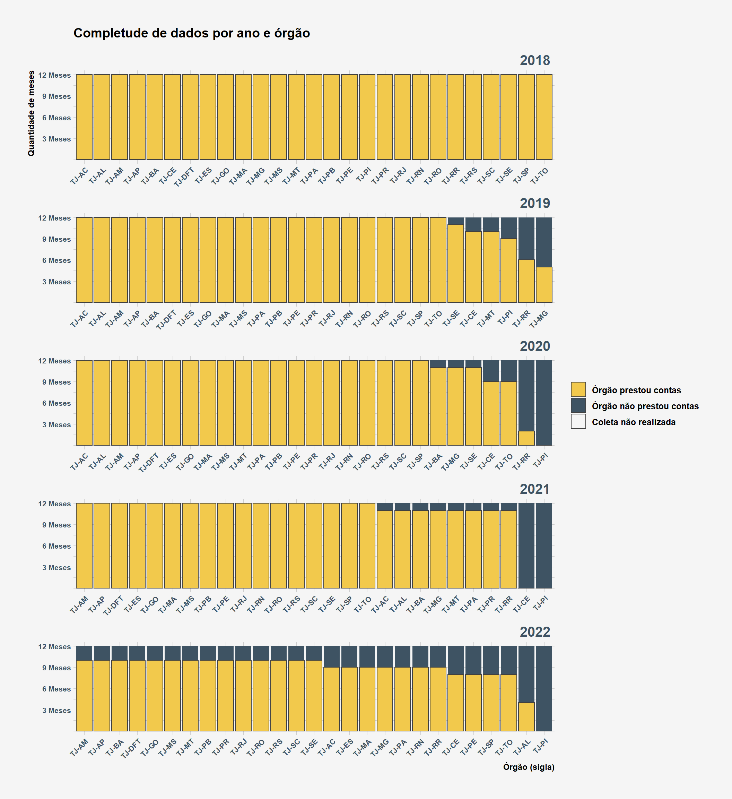
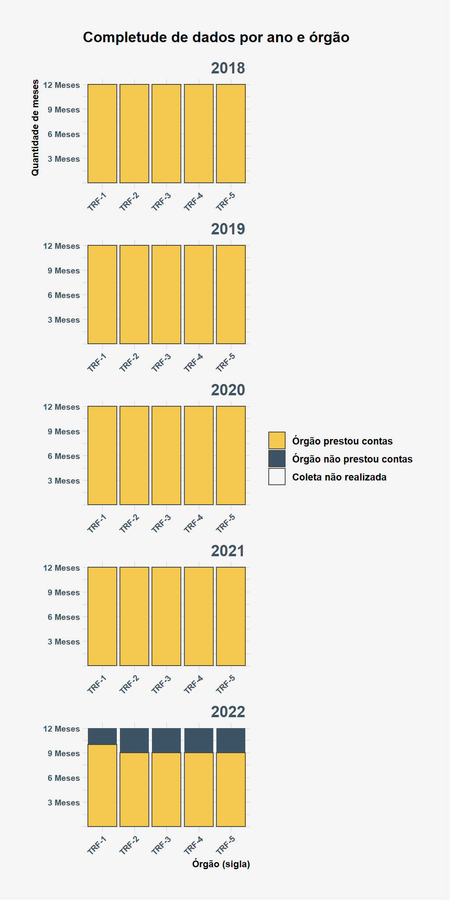
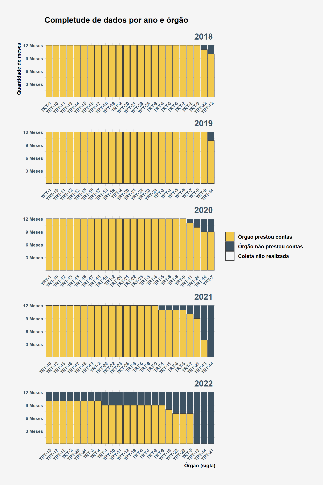
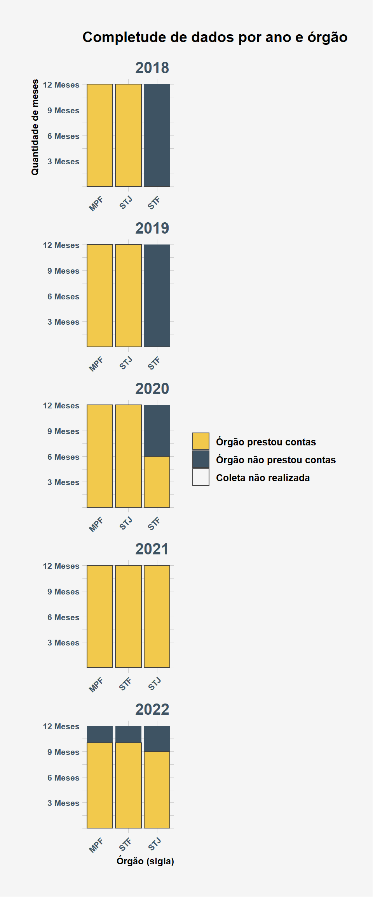

Disponibilidade dos dados
Órgãos por mês e ano





Órgãos por ano





---
title: "Disponibilidade dos dados"
lang: pt-BR
format:
html:
html-math-method: katex
css: style.css
anchor-sections: true
code-fold: true
code-tools: true
code-link: true
code-line-numbers: true
code-summary: "Código"
toc: true
toc-title: "Índice"
toc-depth: 4
toc-float: false
toc-collapsed: false
footnotes-hover: true
smooth-scroll: true
fig-width: 11
fig-height: 7
search: true
theme:
light: flatly
dark: darkly
knitr:
opts_chunk:
echo: false
collapse: true
message: false
warning: false
comment: "#>"
editor_options:
chunk_output_type: console
execute:
cache: false
---
```{r}
library(tidyverse)
library(here)
source(here("src/00-plot-aesthetics.R"), encoding = "utf-8")
prestacao_contas <- "data/load" %>%
here() %>%
list.files(pattern = "indices-2022-\\d{2}-\\d{2}", full.names = TRUE) %>%
file.info() %>%
rownames_to_column(var = "file") %>%
filter(ctime == max(ctime)) %>%
pull(file) %>%
readRDS() %>%
transmute(
mes, ano, data, subgrupo,
periodo_invalido = if_else(mes %in% 11:12 & ano == 2022, TRUE, periodo_invalido),
prestou_contas = if_else(acesso == "Órgão não prestou contas", FALSE, TRUE),
prestou_contas_lbl = if_else(
prestou_contas,
"Órgão prestou contas",
"Órgão não prestou contas"
) %>% fct_reorder(prestou_contas),
aid = fct_reorder(aid, prestou_contas, sum)
)
prestacao_contas %>%
distinct(aid, subgrupo) %>%
group_by(subgrupo) %>%
nest() %>%
deframe() %>%
map(pull) %>%
list2env(., .GlobalEnv) %>%
invisible()
```
```{r}
plot_grid <- function(df, subgroup) {
df <- df %>% filter(aid %in% subgroup)
plot_title <- str_glue("Prestação de contas | {unique(df$subgrupo)}")
df %>%
filter(!periodo_invalido) %>%
ggplot(aes(x = data, y = aid, fill = prestou_contas_lbl)) +
facet_wrap(ano ~ ., nrow = 1, scales = "free_x") +
geom_tile(color = "gray60") +
geom_tile(
data = . %>% filter(periodo_invalido),
fill = cores_dadosjusbr[["cinza_claro"]],
color = "gray25"
) +
scale_fill_manual(values = cores_prestou_contas) +
scale_x_date(
date_breaks = "3 months",
date_labels = "%b"
) +
theme_adjust_waffle +
labs(
x = "Cada célula representa 1 mês",
y = NULL,
title = plot_title,
fill = NULL
) +
guides(fill = guide_legend(nrow = 1)) +
scale_y_discrete(expand = c(0, 0)) +
theme(axis.title.x = element_text(face = "italic"))
}
```
### Órgãos por mês e ano
:::{.column-page}
::: {.panel-tabset}
#### MP's
```{r}
#| label: plot-mp-grid
#| echo: false
#| warning: false
#| message: false
plot_grid(df = prestacao_contas, subgroup = `Ministérios Públicos estaduais`)
```
#### TJ's
```{r}
#| label: plot-tj-grid
#| echo: false
#| warning: false
#| message: false
#| fig-height: 9
plot_grid(df = prestacao_contas, subgroup = `Tribunais de Justiça estaduais`)
```
#### TRF's
```{r}
#| label: plot-trf-grid
#| echo: false
#| warning: false
#| message: false
#| fig-height: 5
plot_grid(df = prestacao_contas, subgroup = `Tribunais Regionais Federais`)
```
#### TRT's
```{r}
#| label: plot-trt-grid
#| echo: false
#| warning: false
#| message: false
#| fig-height: 6
plot_grid(df = prestacao_contas, subgroup = `Tribunais Regionais do Trabalho`)
```
#### TJM's
```{r}
#| label: plot-tjm-grid
#| echo: false
#| warning: false
#| message: false
#| fig-height: 3.5
plot_grid(df = prestacao_contas, subgroup = `Tribunais de Justiça Militar`)
```
#### Órgãos superiores
```{r}
#| label: plot-superiores-grid
#| echo: false
#| warning: false
#| message: false
#| fig-height: 3
plot_grid(df = prestacao_contas %>% filter(aid != "MPF"), subgroup = `Órgãos superiores`)
```
:::
:::
### Órgãos por ano
```{r}
plot_bars <- function(df, subgroup) {
df %>%
count(aid, ano, prestou_contas_lbl, prestou_contas) %>%
complete(aid, ano, prestou_contas, fill = list(n = 0)) %>%
filter(prestou_contas, aid %in% subgroup) %>%
ggplot(aes(
x = tidytext::reorder_within(aid, -n, ano),
y = n
)) +
geom_col(aes(y = 12, fill = "Órgão não prestou contas"),
width = .9) +
geom_col(aes(fill = prestou_contas_lbl), color = "gray25") +
tidytext::scale_x_reordered() +
facet_wrap(~ ano, ncol = 1, scales = "free") +
scale_y_continuous(
breaks = seq(0, 12, 3)[-1],
labels = paste(seq(0, 12, 3)[-1], "Meses")
) +
scale_fill_manual(values = cores_prestou_contas) +
labs(
title = "Completude de dados por ano e órgão",
y = "Quantidade de meses",
x = "Órgão (sigla)",
fill = NULL
) +
theme(axis.text.x = element_text(size = 8, angle = 45, hjust = 1),
axis.text.y = element_text(size = 8),
axis.ticks.x = element_blank(),
panel.spacing = unit(1, "mm"),
strip.text = element_text(face = "bold", size = 15, hjust = 1))
}
```
::: {.column-page}
::: {.panel-tabset}
#### MP's
```{r}
#| label: plot-mp-bars
#| echo: false
#| warning: false
#| message: false
#| fig-height: 12
#| fig-width: 10
plot_bars(df = prestacao_contas, subgroup = `Ministérios Públicos estaduais`)
```
#### TJ's
```{r}
#| label: plot-tj-bars
#| echo: false
#| warning: false
#| message: false
#| fig-height: 12
plot_bars(df = prestacao_contas, subgroup = `Tribunais de Justiça estaduais`)
```
#### TRF's
```{r}
#| label: plot-trf-bars
#| echo: false
#| warning: false
#| message: false
#| fig-height: 12
#| fig-width: 6
plot_bars(df = prestacao_contas, subgroup = `Tribunais Regionais Federais`)
```
#### TRT's
```{r}
#| label: plot-trt-bars
#| echo: false
#| warning: false
#| message: false
#| fig-height: 12
#| fig-width: 8
plot_bars(df = prestacao_contas, subgroup = `Tribunais Regionais do Trabalho`)
```
#### TJM's
```{r}
#| label: plot-tjm-bars
#| echo: false
#| warning: false
#| message: false
#| fig-height: 12
#| fig-width: 5
plot_bars(df = prestacao_contas, subgroup = `Tribunais de Justiça Militar`)
```
#### Órgãos superiores
```{r}
#| label: plot-superiores-bars
#| echo: false
#| warning: false
#| message: false
#| fig-height: 12
#| fig-width: 5
plot_bars(df = prestacao_contas, subgroup = `Órgãos superiores`)
```
:::
:::